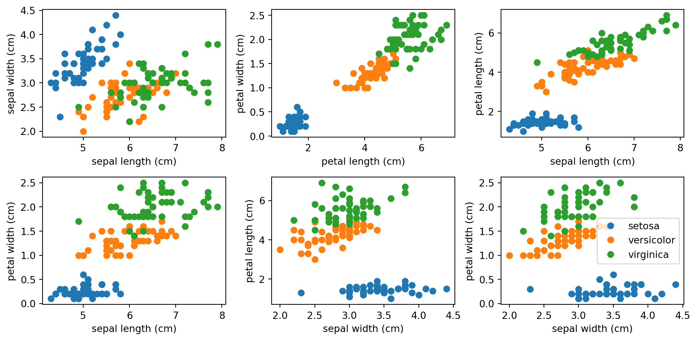
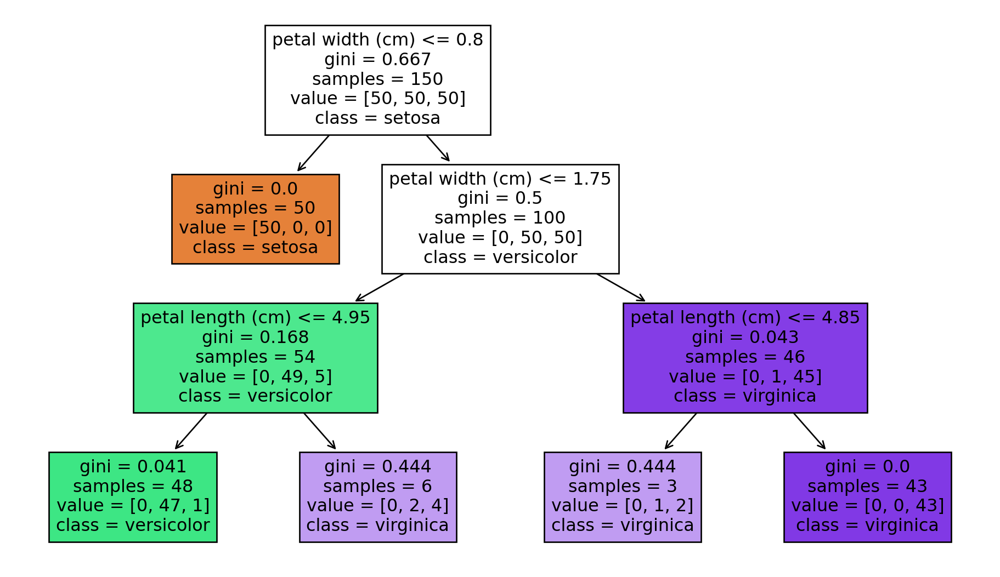
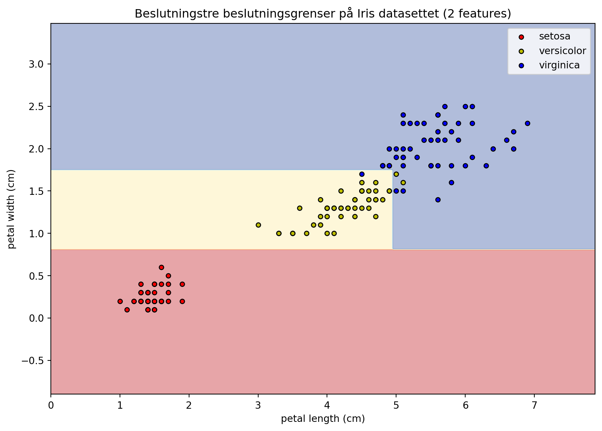

graph LR
A[Feature A > X?<br>Node] -->|Yes| B(Feature B ≤ Y?<br>Node)
A -->|No| C{Feature C > Z?<br>Node}
B -->|Yes| D((Class 1<br>Leaf))
B -->|No| E((Class 2<br>Leaf))
C -->|Yes| F((Class 3<br>Leaf))
C -->|No| G((Class 4<br>Leaf))
style A fill:#f9f,stroke:#333,stroke-width:2px
style B fill:#f9f,stroke:#333,stroke-width:2px
style C fill:#f9f,stroke:#333,stroke-width:2px
style D fill:#ccf,stroke:#333,stroke-width:2px
style E fill:#ccf,stroke:#333,stroke-width:2px
style F fill:#ccf,stroke:#333,stroke-width:2px
style G fill:#ccf,stroke:#333,stroke-width:2px
Forelesningsnotat: Beslutningstrær
Slide-versjon
Videre til beslutningstrær
Vi skal først se på hva beslutningstrær er for noe, og prøve å designe et par slike. Så kjører vi litt live-programmering av beslutningstrær med scikit-learn. Vi venter med skoger og boosting til neste gang.
Beslutningstre
- En trestruktur for prediksjoner.
- Hver node representerer en test
- Hver gren representerer utfallet av testen
- Hvert blad representerer en prediksjon.
Eksempel: Boston housing
import numpy as np
import pandas as pd
df = pd.read_csv("data/HousingData.csv")
print(df.drop(columns=["AGE", "CHAS", "ZN", "DIS"])) CRIM INDUS NOX RM RAD TAX PTRATIO B LSTAT MEDV
0 0.00632 2.31 0.538 6.575 1 296 15.3 396.90 4.98 24.0
1 0.02731 7.07 0.469 6.421 2 242 17.8 396.90 9.14 21.6
2 0.02729 7.07 0.469 7.185 2 242 17.8 392.83 4.03 34.7
3 0.03237 2.18 0.458 6.998 3 222 18.7 394.63 2.94 33.4
4 0.06905 2.18 0.458 7.147 3 222 18.7 396.90 NaN 36.2
.. ... ... ... ... ... ... ... ... ... ...
501 0.06263 11.93 0.573 6.593 1 273 21.0 391.99 NaN 22.4
502 0.04527 11.93 0.573 6.120 1 273 21.0 396.90 9.08 20.6
503 0.06076 11.93 0.573 6.976 1 273 21.0 396.90 5.64 23.9
504 0.10959 11.93 0.573 6.794 1 273 21.0 393.45 6.48 22.0
505 0.04741 11.93 0.573 6.030 1 273 21.0 396.90 7.88 11.9
[506 rows x 10 columns]Verdi på husene
Vi ønsker å estimere median verdi på husene i et område, fra andre kolonner i datasettet.
Grunt beslutningstre
from sklearn.tree import DecisionTreeRegressor
from sklearn.model_selection import train_test_split
from sklearn.tree import plot_tree
import matplotlib.pyplot as plt
df = pd.read_csv("data/HousingData.csv")
X = df.drop(columns=["MEDV"]).values
feature_names = df.drop(columns=["MEDV"]).columns
y = df["MEDV"].values
# Trener modellen
tree = DecisionTreeRegressor(max_depth=2, random_state=4)
tree.fit(X, y)
feature_names = list(feature_names)
feature_names[feature_names.index("RM")] = "Rooms per dwelling"
plt.figure(figsize=(12, 7))
plot_tree(tree, feature_names=feature_names, filled=True)
plt.show()--------------------------------------------------------------------------- ValueError Traceback (most recent call last) Input In [3], in <module> 12 # Trener modellen 13 tree = DecisionTreeRegressor(max_depth=2, random_state=4) ---> 14 tree.fit(X, y) 16 feature_names = list(feature_names) 17 feature_names[feature_names.index("RM")] = "Rooms per dwelling" File ~/.pyenv/versions/hon2200/lib/python3.9/site-packages/sklearn/tree/_classes.py:1315, in DecisionTreeRegressor.fit(self, X, y, sample_weight, check_input, X_idx_sorted) 1278 def fit( 1279 self, X, y, sample_weight=None, check_input=True, X_idx_sorted="deprecated" 1280 ): 1281 """Build a decision tree regressor from the training set (X, y). 1282 1283 Parameters (...) 1312 Fitted estimator. 1313 """ -> 1315 super().fit( 1316 X, 1317 y, 1318 sample_weight=sample_weight, 1319 check_input=check_input, 1320 X_idx_sorted=X_idx_sorted, 1321 ) 1322 return self File ~/.pyenv/versions/hon2200/lib/python3.9/site-packages/sklearn/tree/_classes.py:165, in BaseDecisionTree.fit(self, X, y, sample_weight, check_input, X_idx_sorted) 163 check_X_params = dict(dtype=DTYPE, accept_sparse="csc") 164 check_y_params = dict(ensure_2d=False, dtype=None) --> 165 X, y = self._validate_data( 166 X, y, validate_separately=(check_X_params, check_y_params) 167 ) 168 if issparse(X): 169 X.sort_indices() File ~/.pyenv/versions/hon2200/lib/python3.9/site-packages/sklearn/base.py:578, in BaseEstimator._validate_data(self, X, y, reset, validate_separately, **check_params) 572 if validate_separately: 573 # We need this because some estimators validate X and y 574 # separately, and in general, separately calling check_array() 575 # on X and y isn't equivalent to just calling check_X_y() 576 # :( 577 check_X_params, check_y_params = validate_separately --> 578 X = check_array(X, **check_X_params) 579 y = check_array(y, **check_y_params) 580 else: File ~/.pyenv/versions/hon2200/lib/python3.9/site-packages/sklearn/utils/validation.py:800, in check_array(array, accept_sparse, accept_large_sparse, dtype, order, copy, force_all_finite, ensure_2d, allow_nd, ensure_min_samples, ensure_min_features, estimator) 794 raise ValueError( 795 "Found array with dim %d. %s expected <= 2." 796 % (array.ndim, estimator_name) 797 ) 799 if force_all_finite: --> 800 _assert_all_finite(array, allow_nan=force_all_finite == "allow-nan") 802 if ensure_min_samples > 0: 803 n_samples = _num_samples(array) File ~/.pyenv/versions/hon2200/lib/python3.9/site-packages/sklearn/utils/validation.py:114, in _assert_all_finite(X, allow_nan, msg_dtype) 107 if ( 108 allow_nan 109 and np.isinf(X).any() 110 or not allow_nan 111 and not np.isfinite(X).all() 112 ): 113 type_err = "infinity" if allow_nan else "NaN, infinity" --> 114 raise ValueError( 115 msg_err.format( 116 type_err, msg_dtype if msg_dtype is not None else X.dtype 117 ) 118 ) 119 # for object dtype data, we only check for NaNs (GH-13254) 120 elif X.dtype == np.dtype("object") and not allow_nan: ValueError: Input contains NaN, infinity or a value too large for dtype('float32').
Litt dypere
df = pd.read_csv("data/HousingData.csv")
X = df.drop(columns=["MEDV"]).values
feature_names = df.drop(columns=["MEDV"]).columns
y = df["MEDV"].values
# Trener modellen
tree = DecisionTreeRegressor(max_depth=3, random_state=4)
tree.fit(X, y)
feature_names = list(feature_names)
feature_names[feature_names.index("RM")] = "Rooms per dwelling"
plt.figure(figsize=(12, 7))
plot_tree(tree, feature_names=feature_names, filled=True)
plt.show()--------------------------------------------------------------------------- ValueError Traceback (most recent call last) Input In [4], in <module> 7 # Trener modellen 8 tree = DecisionTreeRegressor(max_depth=3, random_state=4) ----> 9 tree.fit(X, y) 11 feature_names = list(feature_names) 12 feature_names[feature_names.index("RM")] = "Rooms per dwelling" File ~/.pyenv/versions/hon2200/lib/python3.9/site-packages/sklearn/tree/_classes.py:1315, in DecisionTreeRegressor.fit(self, X, y, sample_weight, check_input, X_idx_sorted) 1278 def fit( 1279 self, X, y, sample_weight=None, check_input=True, X_idx_sorted="deprecated" 1280 ): 1281 """Build a decision tree regressor from the training set (X, y). 1282 1283 Parameters (...) 1312 Fitted estimator. 1313 """ -> 1315 super().fit( 1316 X, 1317 y, 1318 sample_weight=sample_weight, 1319 check_input=check_input, 1320 X_idx_sorted=X_idx_sorted, 1321 ) 1322 return self File ~/.pyenv/versions/hon2200/lib/python3.9/site-packages/sklearn/tree/_classes.py:165, in BaseDecisionTree.fit(self, X, y, sample_weight, check_input, X_idx_sorted) 163 check_X_params = dict(dtype=DTYPE, accept_sparse="csc") 164 check_y_params = dict(ensure_2d=False, dtype=None) --> 165 X, y = self._validate_data( 166 X, y, validate_separately=(check_X_params, check_y_params) 167 ) 168 if issparse(X): 169 X.sort_indices() File ~/.pyenv/versions/hon2200/lib/python3.9/site-packages/sklearn/base.py:578, in BaseEstimator._validate_data(self, X, y, reset, validate_separately, **check_params) 572 if validate_separately: 573 # We need this because some estimators validate X and y 574 # separately, and in general, separately calling check_array() 575 # on X and y isn't equivalent to just calling check_X_y() 576 # :( 577 check_X_params, check_y_params = validate_separately --> 578 X = check_array(X, **check_X_params) 579 y = check_array(y, **check_y_params) 580 else: File ~/.pyenv/versions/hon2200/lib/python3.9/site-packages/sklearn/utils/validation.py:800, in check_array(array, accept_sparse, accept_large_sparse, dtype, order, copy, force_all_finite, ensure_2d, allow_nd, ensure_min_samples, ensure_min_features, estimator) 794 raise ValueError( 795 "Found array with dim %d. %s expected <= 2." 796 % (array.ndim, estimator_name) 797 ) 799 if force_all_finite: --> 800 _assert_all_finite(array, allow_nan=force_all_finite == "allow-nan") 802 if ensure_min_samples > 0: 803 n_samples = _num_samples(array) File ~/.pyenv/versions/hon2200/lib/python3.9/site-packages/sklearn/utils/validation.py:114, in _assert_all_finite(X, allow_nan, msg_dtype) 107 if ( 108 allow_nan 109 and np.isinf(X).any() 110 or not allow_nan 111 and not np.isfinite(X).all() 112 ): 113 type_err = "infinity" if allow_nan else "NaN, infinity" --> 114 raise ValueError( 115 msg_err.format( 116 type_err, msg_dtype if msg_dtype is not None else X.dtype 117 ) 118 ) 119 # for object dtype data, we only check for NaNs (GH-13254) 120 elif X.dtype == np.dtype("object") and not allow_nan: ValueError: Input contains NaN, infinity or a value too large for dtype('float32').
Fordeler
- Intuitivt og lett å tolke: Kan ligne menneskelig beslutningstaking.
- Kan uten videre predikere flere klasser (i motsetning til vanlig logistisk regresjon)
Ulemper:
- Tendens til overtilpasning: Kan bli for komplekse og tilpasse seg treningsdataene for godt.
- Ustabile: Små endringer i dataene kan føre til store endringer i treet.
- “Grådig” algoritme: Lokal optimalisering, ikke garantert globalt optimalt tre.
På grunn av disse ulempene lager man gjerne en random forest av beslutningstrær for å få en bedre prediktor. Det skal vi se på en annen dag.
Eksempel: iris-datasettet
import matplotlib as mpl
import matplotlib.pyplot as plt
import numpy as np
import pandas as pd
from sklearn.datasets import load_iris
prop_cycle = mpl.rcParams['axes.prop_cycle']
colors = prop_cycle.by_key()['color']
iris = load_iris()
X, y = np.array(iris.data), np.array(iris.target)
target_names = iris.target_names
feature_names = iris.feature_names
color_list = [colors[i] for i in y]
names = [target_names[i] for i in y]
df = pd.DataFrame({
feature_names[0] : X[:,0],
feature_names[1] : X[:,1],
feature_names[2] : X[:,2],
feature_names[3] : X[:,3],
"species" : names
})
plot_pairs = [[0,1], [2, 3], [0, 2], [0, 3], [1, 2], [1,3]]
plt.figure(figsize=(10, 5))
for i, pair in enumerate(plot_pairs):
plt.subplot(2,3,i+1)
for species, frame in df.groupby("species"):
plt.plot(frame[feature_names[pair[0]]], frame[feature_names[pair[1]]], "o", label=species)
plt.xlabel(feature_names[pair[0]])
plt.ylabel(feature_names[pair[1]])
plt.legend()
plt.tight_layout()
Er det potensiale for å bruke et beslutningstre for å vurdere iris-arter her?
Lage beslutningstre med scikit-learn
from sklearn.tree import DecisionTreeClassifier, plot_tree
from sklearn.datasets import load_iris
import matplotlib.pyplot as plt
# Laster inn Iris datasettet
iris = load_iris()
X, y = iris.data, iris.target
predictor_names = ["sepal length"]
# Initialiserer og trener et beslutningstre
dtree = DecisionTreeClassifier(max_depth=3, random_state=0) #
#Begrenser dybden for visualisering
dtree.fit(X, y)
# Visualiserer beslutningstreet
plt.figure(figsize=(12, 7))
plot_tree(dtree, feature_names=iris.feature_names, class_names=iris.target_names, filled=True)
plt.show()
Med test-train-split
from sklearn.tree import DecisionTreeClassifier, plot_tree
from sklearn.datasets import load_iris
import matplotlib.pyplot as plt
iris = load_iris()
X, y = iris.data, iris.target
dtree = DecisionTreeClassifier(max_depth=3, random_state=0) #
dtree.fit(X, y)
dummy_prediction = dtree.predict([
[0.1, 0.1, 0.1, 0.1],
[0.5, 0.5, 0.5, 0.9]])
print(iris.target_names[dummy_prediction])
print(iris.feature_names)['setosa' 'versicolor']
['sepal length (cm)', 'sepal width (cm)', 'petal length (cm)', 'petal width (cm)']Note
Bruk from sklearn.model_selection sin train_test_split til å lage et beslutningstre med treningsdata og sjekk hvor god presisjon det har på valideringsdataene.
Visualisering av prediksjonen
X_2d = X[:, 2:4] # Sepal length and sepal width
# --- Visualisering av beslutningsgrenser og datapunkter ---
# 1. Lag et meshgrid for å plotte beslutningsregionene
x_min, x_max = X_2d[:, 0].min() - 1, X_2d[:, 0].max() + 1
y_min, y_max = X_2d[:, 1].min() - 1, X_2d[:, 1].max() + 1
xx, yy = np.meshgrid(np.arange(x_min, x_max, 0.02),
np.arange(y_min, y_max, 0.02))
# 2. Prediker klassen for hvert punkt i meshgridet
Z = dtree.predict(np.c_[xx.ravel(), yy.ravel(), xx.ravel(), yy.ravel()])
Z = Z.reshape(xx.shape)
# 3. Plot beslutningsregionene som en contour plot
plt.figure(figsize=(10, 7))
plt.contourf(xx, yy, Z, alpha=0.4, cmap=plt.cm.RdYlBu) # Fyll regionene med farger
# 4. Plot de faktiske datapunktene oppå
colors = ['r', 'y', 'b'] # Farger for hver Iris klasse
for i, color in zip(range(len(target_names)), colors):
idx = np.where(y == i)
plt.scatter(X_2d[idx, 0], X_2d[idx, 1], c=color, label=target_names[i],
cmap=plt.cm.RdYlBu, edgecolor='black', s=20)
# 5. Legg til labels og tittel
plt.xlabel(feature_names[2])
plt.ylabel(feature_names[3])
plt.title('Beslutningstre beslutningsgrenser på Iris datasettet (2 features)')
plt.legend(loc='best', shadow=False, scatterpoints=1)
plt.xlim(xx.min(), xx.max())
plt.ylim(yy.min(), yy.max())
plt.show()
Neste gang
- Random forest og boosting
- Hvordan lære noe av trær og skoger, feature importance, partial dependence.